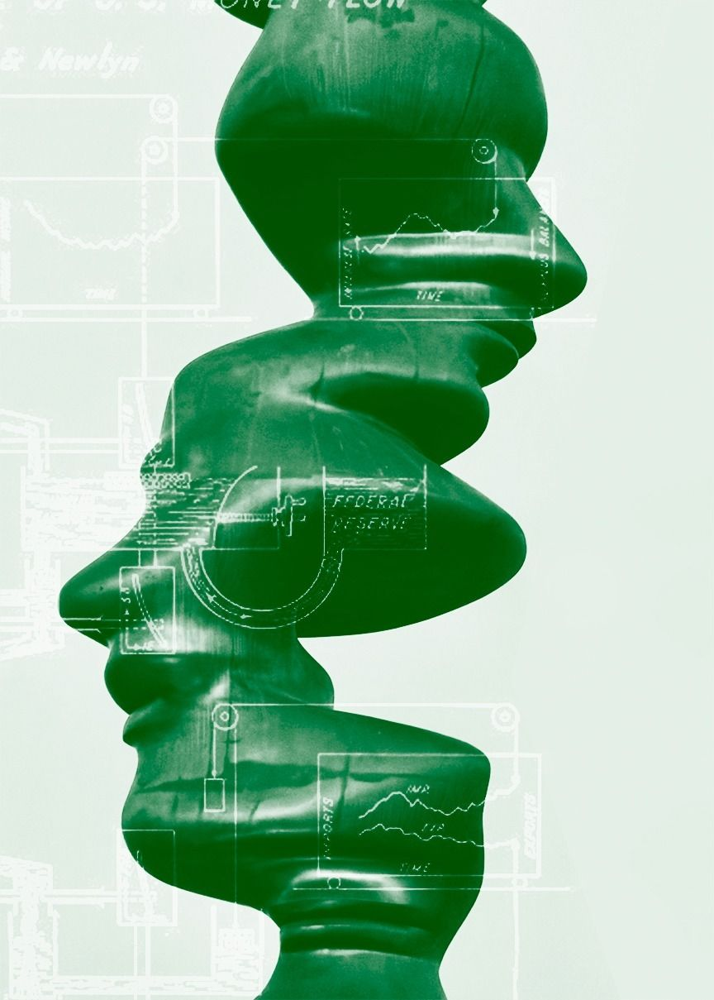

You already have a research budget.
This is what it could be buying.
Aux Labs is a research firm. That's the line item, and it's deliberate: you don't need a new category in your budget to hire us, and we'd rather be judged against the research you're already buying than against a category nobody can price.
So judge us against it.
[ THE_REAL_AMBITION ]We start with research because it's bounded and easy to say yes to. Our real ambition is bigger, and we'd rather you knew it now: we're a think-and-do tank. The same team can carry a finding into the creative work, the brand, the press, the policy and the public good, which usually sit in separate rooms with separate budgets. How we price that.
Here is the commitment: the people who gather the evidence are the people who write the finding. Qualitative and quantitative, in whatever mix the question needs. Sometimes that means being in the room where the behavior happens; sometimes it means the whole archive rather than a sample. Then comes the part research usually leaves out: we build the fix. You pay for a recommendation once, then pay again to act on it. A mechanism keeps working after we leave.
Marketing buys attention. We build mechanisms that earn legitimacy.
[ THE_BRIDGE ]Your CSR budget is a Pretend Era™ artifact: money spent performing values nobody inside the building quite believes in. We convert the performance into a mechanism: a structure that serves the company's actual interest and leaves a public good behind. Here's who we've done it for.

Mechanism Checklist
- Nobody has to act against their own interest
- Nobody is worse off
- It still runs after we're gone
Diagnostic
Audit.
You already run a system: a schedule, a route, a policy, a queue. We find what it is costing you that nobody has counted.
Mechanism
Design.
The rule or the default that makes the better behavior the easy one. Not a campaign.
Implementation
Engine.
We build it. Research, product, film, print, software. Whatever the mechanism actually needs. One team, the whole line.
You, if:
- You want your company to do more good, and you need a way to do it that also makes business sense.
- You're tired of being sold serviced labor: another Instagram carousel and content calendar, whether or not that's the problem you actually need solved.
- You'd collapse your CSR budget and your brand budget into one thing, if you could see it pay.
- You want the uncomfortable true thing, in the first call.
What we don't do.
We don't buy attention nobody would have given us: work has to earn its own distribution before media spend goes behind it, and then we scale it, hard. We don't do desk-only research. We don't take work where the answer is already decided and the study is procurement cover.
We'll tell you which of those we think you're asking for, in the first call, for free.
Why a mechanism is
harder to leave.
01_DEFENSIBLE_LOYALTY
When your brand is the source of a public utility, switching away from you costs the public something.
02_OUTCOMES_OVER_MESSAGING
Ten percent of people rate advertising practitioners' honesty as high or very high: that is FIG. 01 on the front page. Messaging is discounted on arrival. A mechanism puts the outcome first and lets the brand be found standing behind it.
Turn your budget
into a mechanism.
Bring us a system you run: a queue, a policy, a schedule, a brand, a public you need to reach. Whether it's struggling or already working, we'll show you where it's losing trust and value, and what a better mechanism could do. If we're not the right fit, we'll say so in the meeting.
[ BOOK_A_MEETING ]